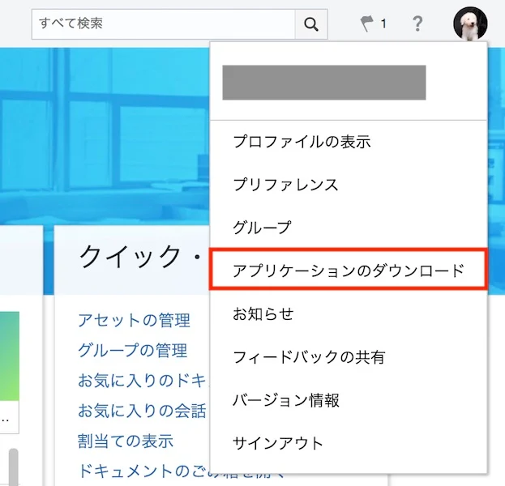
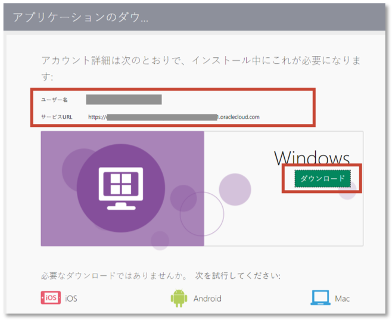
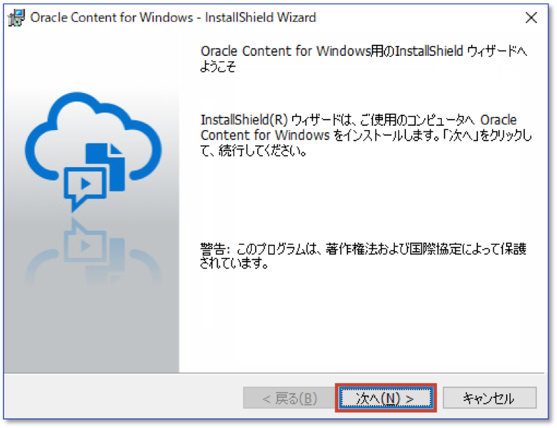
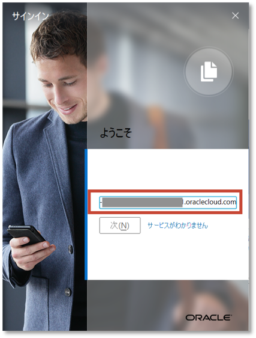
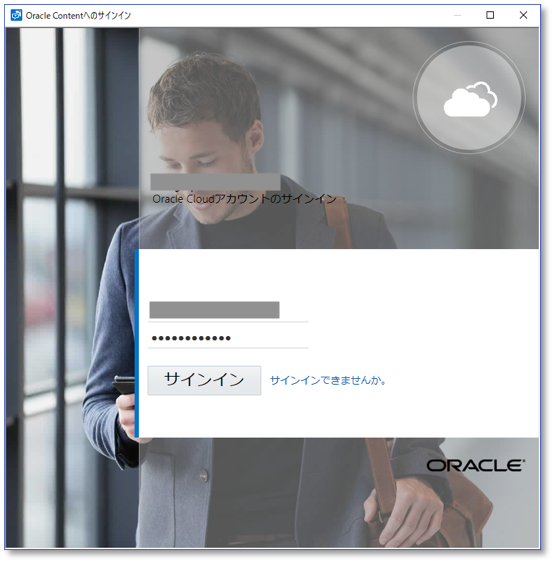
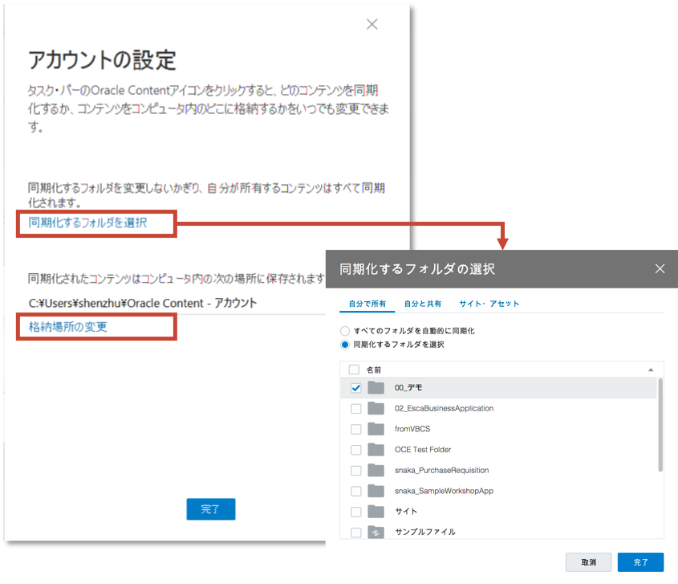
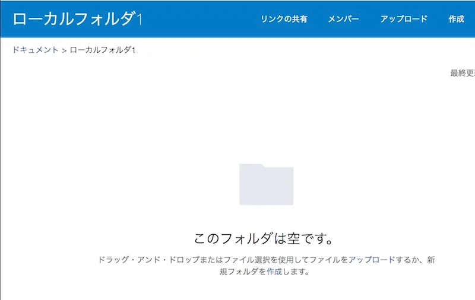
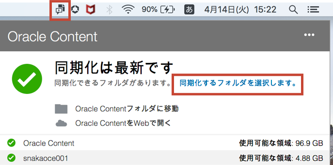
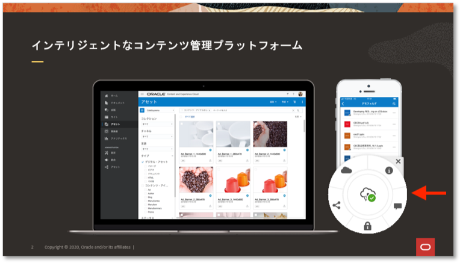
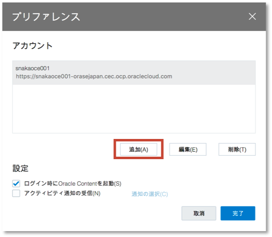

目次に戻る: Oracle Content and Experience のファイル共有機能を使ってみよう【初級編】
OCE のデスクトップ・アプリケーションは、クラウド上のファイルやフォルダとローカル環境のファイルやフォルダを同期します。クラウド上で更新されたファイルやフォルダは、自動的にローカル環境に同期されるため、ユーザーは常に最新のファイルやフォルダをローカル環境で利用することができます
また、ユーザーはネットワークに接続していないオフライン状態で、同期されたファイルやフォルダを操作できます。オフライン状態でローカル環境に同期されたファイルを編集・保存した場合、オンライン状態に復旧した時に自動的にクラウド上に反映されます。そのため、ユーザーが意識することなく、常に最新の状態がクラウド上で維持されます。
デスクトップ・アプリケーションの利用には、ローカル環境へのインストールとOCEインスタンスの接続先情報の設定が必要です。デスクトップ・アプリケーションが対応するクライアント環境は、下記ドキュメントよりご確認ください
この文書は、2020年5月時点での最新バージョン(20.2.2)を元に作成されてます
前提条件
- Oracle Content and Experience インスタンスを作成する
- OCE の利用ユーザーに OCE インスタンスの CECStandardUser もしくは CECEnterpriseUser アプリケーション・ロールが付与されていること
1. デスクトップ・アプリケーションのインストールとセットアップ
1.1 インストーラーのダウンロード
OCE インスタンスから、デスクトップ・アプリケーションのインストーラーをダウンロードします。
-
Web ブラウザを開き、OCE インスタンスにアクセスします
-
右上のユーザーアイコン→ 「アプリケーションのダウンロード」 をクリックします

-
「ユーザー名」 と 「サービスURL」 をテキストファイルなどにメモします（インストール完了後のセットアップ作業で利用します）
-
ローカル環境のコンピュータと同じOSを選択し、「ダウンロード」 をクリックします（ここでは Windows を選択）

-
ダウンロードが完了するまで待ちます
1.2 インストーラーの実行とセットアップ
ダウンロードされたインストーラーを実行します。ここでは、Windows 環境へのインストール手順を紹介します
- ダウンロードされたインストーラーを起動します
-
インストーラーのガイダンスに従い、「次へ」 をクリックします

-
「インストール」 をクリックします

-
「Oracle Content for Windowsの起動」 を選択し、「完了」 をクリックします

-
-
セットアップ画面が表示されます。前の手順でメモした 「サービスURL」 を入力し、「次」 をクリックします

[TIPS]
ここで指定するサービスURLの形式は以下の通りです。/documents はつけません
https://<OCE_Instance>-<Cloud_Account>.cec.ocp.oraclecloud.com -
「ユーザーID」 と 「パスワード」 を入力し、「サイン・イン」 をクリックします

- 「アカウントの設定」 画面が開きます
-
「同期化するフォルダを選択」 をクリックします
-
「同期化するフォルダを選択」 を選択し、ローカル環境に同期するフォルダを選択します（同期するフォルダを選択しないこともできます）

[TIPS]
デフォルトは 「すべてのフォルダを自動的に同期化」 が選択されています。この設定の場合、クラウド上の自分が所有者のすべてのフォルダがローカル環境に同期されます -
必要に応じて 「格納場所の変更」 をクリックし、変更します
[TIPS]
格納場所のデフォルトは以下の通りです。また、格納場所として指定できるのはローカルドライブのみです
[Windows] C:¥Users¥USER_NAME¥Oracle Content-アカウント
[Mac] /Users/USER_NAME/Oracle Content-アカウント
-
-
最後に 「完了」 をクリックします
[TIPS]
デスクトップ・アプリケーションは、コンピュータの電源を入れると自動的に起動されるように構成されます。この構成はプリファレンスより変更できます
2. ファイル・フォルダの同期
2.1 ローカル→クラウドへの同期
ローカル環境の複数フォルダをOCEアカウントの同期フォルダ領域にコピーすると、自動的にクラウド上に反映されることを確認します
-
通知領域（もしくはタスクバー）の 「OCE アイコン」 をクリックします
-
「Oracle Content フォルダに移動」 をクリックします。複数アカウントが登録されている場合は、OCEアカウントも選択します

-
ローカル環境のフォルダを、アップロード先のフォルダにコピーします。ここでは、「ローカルフォルダ1」 と 「ローカルフォルダ2」 を、snakaoce001 アカウントの直下にコピーします

-
コピーしたフォルダおよびその配下の全てのフォルダ・ファイルが、自動的にクラウド上に同期されます。
Web ブラウザを開き、OCE インスタンスにアクセスし、アップロード先のフォルダを開きます。クラウド上にフォルダが反映されていることを確認します
-
Web ブラウザで 「ローカルフォルダ1」 を開きます。中身はファイルが1件も登録されていません

-
ローカル環境で 「ローカルフォルダ1」 を開き、ファイルを1つ登録します。「進行中」 のアイコンが表示され、その後 「完了」 のアイコンに切り替わります

-
Web ブラウザに戻り、「ローカルフォルダ1」 をもう一度開きます（もしくはブラウザをリロードします）。ファイルが1件登録されていることを確認します

2.2 クラウド→ローカルへの同期
クラウド上にあるフォルダを、ローカル環境に同期します。ここでは、自分が所有者のフォルダ をローカル環境に同期する手順について紹介します
-
通知領域（もしくはタスクバー）の 「OCE アイコン」 をクリックします
-
「同期化するフォルダを選択します」 をクリックします

-
（複数アカウントを登録している場合）アカウント を選択します
-
「自分で所有」 タブを選択します
-
ローカルに同期するフォルダを選択し、「完了」 をクリックします（ここでは「00_デモ」を選択）

-
指定したフォルダ（ここでは「00_デモ」）およびその配下のフォルダ・ファイルのすべてが、ローカル環境に同期されます

- 「同期化するフォルダ」のタブ説明
- 自分で所有: 自分が所有者のフォルダ（＝自分が作成したフォルダ、メンバー共有の有無は関係なし）
- 自分と共有: 他ユーザーから共有されたフォルダ
-
サイト・アセット: Web サイトで利用するテンプレート、テーマ、コンポーネントが保管されるフォルダ
[TIPS]
「自分と共有」タブ と 「サイト・アセット」タブ で表示されるフォルダは、ダウンロード実行者 以上のアクセス権限が必要です。アクセス権限が参照者のフォルダは表示されません
2.3. 同期したファイル・フォルダの操作
ローカル環境に同期したファイル・フォルダは、通常のフォルダやファイルと同じ操作ができます。さらに、デスクトップ・アプリケーションのインストールにより、OCE 専用のメニューが追加されます。
ここでは、OCE 専用メニューについて説明します

-
OCE専用メニューの説明
-
Oracle Content
-
会話: ファイル紐付けの会話をブラウザで表示
-
プロパティ: ファイルのプロパティをダイアログ表示
-
WebのOracle Contentでフォルダを開く: フォルダをWebブラウザで表示
-
同期化の問題: ファイルやフォルダの同期処理に問題があった場合のみ表示
-
-
リンクのコピー: パブリックリンクを生成し、クリップボードにコピーします。作成されるパブリックリンクは、サービス管理者が設定したデフォルト条件となります
-
リンクの共有: リンクの共有ダイアログを表示し、パブリックリンクの作成、もしくはメンバーリンク（オンライン・アクセス or ダイレクト・アクセスの取得、を実行します
-
予約/予約のクリア: ファイルを予約/予約解除します
-
2.4 同期した Office ファイルの操作
デスクトップ・アプリケーションがインストールされた Windows OS のクライアント環境で、クラウドから同期された Office ファイルを開くと、OCE専用の円形メニュー（Radial Menu）が表示されます。
この円形メニューより、以下の OCE が提供する機能にすばやくアクセスできます
-
ファイルのプロパティ表示
-
予約/予約解除
-
ファイルの共有リンクの操作（パブリックリンクなど）
-
ファイルに関連付けられている会話の表示
-
またはWebブラウザでのOracle Contentのファイルのオープン
-
中央のアイコンで同期ステータス（同期完了済、同期進行中）も確認できます

3. その他設定
3.1. OCE アカウントの追加
デスクトップ・アプリケーションには、複数のOCEアカウントを設定できます。登録可能なOCEアカウントは 最大5個 です
-
通知領域（もしくはタスクバー）の 「OCE アイコン」 をクリックします
-
メニューアイコン をクリックします
-
「プリファレンス」 をクリックします

-
「追加」 をクリックします

- 初回セットアップ時と同じ手順で、サーバーURL、ユーザーID、パスワード を入力します
- 「同期化するフォルダを選択」 をクリックし、ローカル環境に同期化するクラウド上のフォルダを選択します
- 「アカウント名」 を入力します。必要に応じて、格納場所を選択します
-
「完了」 をクリクします

-
新しいOCEアカウントが作成されます

3.2. 通知プリファレンスの設定
ローカル環境への通知のON/OFFおよび通知の条件をカスタマイズできます
-
通知領域（もしくはタスクバー）の OCE アイコン→メニューアイコン→プリファレンス をクリックします
-
「アクティビティ通知の受信」 を選択し、「通知の選択」 をクリックします

-
通知プリファレンスが表示されます。通知設定をカスタマイズし、「完了」 をクリックします

[TIPS]
「アクティビティ通知の受信」の選択を外すと、デスクトップへの通知すべてが OFF になります
3.3 その他デスクトップ・アプリケーションのメニュー
その他メニューについて紹介します

-
すべての同期の一時停止:
-
ネットワークの接続が遅く、他のオンライン・サービス（例：オンライントレーニングの動画視聴）のパフォーマンスの向上が必要な場合、デスクトップ・アプリケーションの同期処理を一時停止できます。
-
一時停止した同期処理を再開するには 「すべての同期化の再開」 をクリックします。一時停止中に行われた変更が適用され、ファイル内に競合する変更がある場合には修正が必要になる場合があります
-
同期処理を完全に停止させる場合は、「同期化するフォルダの選択」 より、同期対象フォルダの選択を解除してください
-
-
同期化の問題:
- 同期処理に何らかの問題が発生した場合は、このメニューより問題内容を調査・確認します
-
ヘルプ→トラブルシューティング→ログの保存:
- デスクトップ・アプリケーションの同期処理のログ・ファイルを保存します。問題発生時の調査・解析などで利用します
-
ヘルプ→更新:
-
デスクトップ・アプリケーションの更新（アップデート）の有無を手動で確認します。更新がある場合は、適用する／しないを選択します
[TIPS]
デスクトップ・アプリケーションに更新がある場合、更新がある旨のダイアログが自動的に表示されます
-
-
ヘルプ→バージョン:
- デスクトップ・アプリケーションのバージョン情報を表示します
以上でこのチュートリアルは終了です。